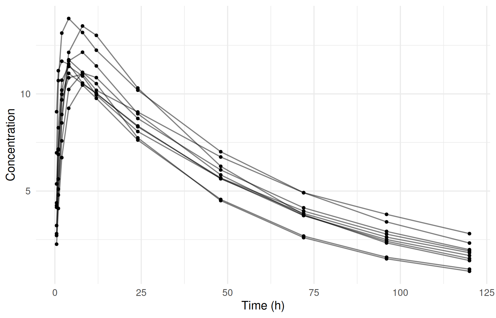
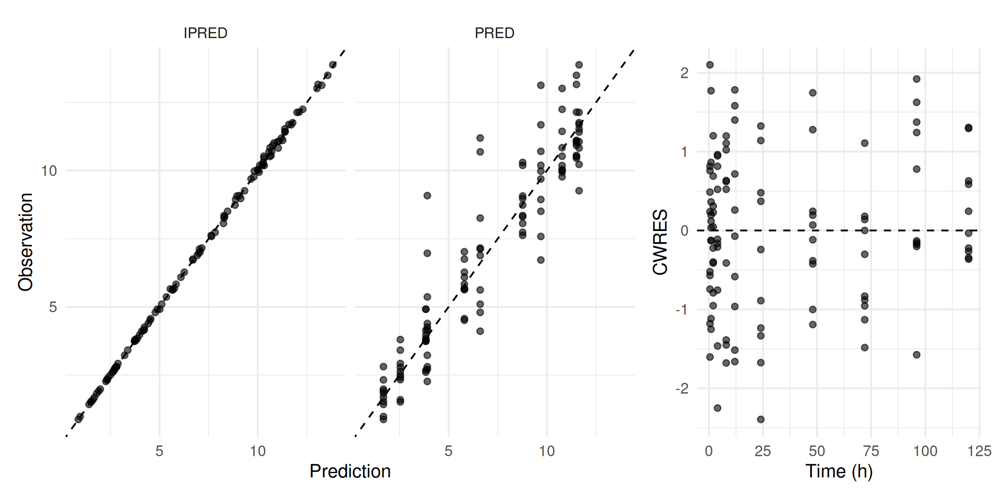
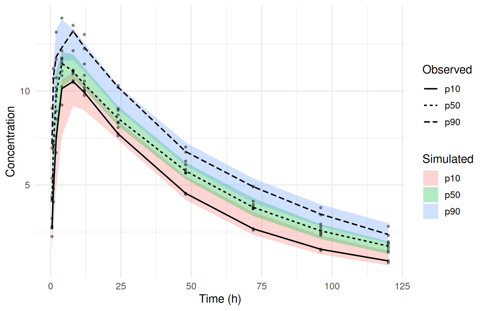

A complete analysis in one chapter
This chapter runs one small population PK analysis from start to finish. It uses the bundled warfarin example (a one-compartment oral model) and moves through every stage of the workflow the book is built around:
data → model → estimate → evaluate → simulate → report
Each section is deliberately short. It shows the one call you need and ends with a pointer to the chapter that covers that stage in depth. Every result below was produced by the code shown, on the pinned ferx-r build (078e489).
The data
ferx ships example models and datasets with the package. ferx_example() takes one argument, name. Given a name, it returns the file paths for that example; called without name, it lists what is available:
ex <- ferx_example("warfarin")
names(ex)
#> [1] "model" "data" "search"ex$model is the model file, ex$data the dataset, and ex$search a model-search configuration used later in Model development and selection. The dataset is a plain CSV with one row per dose or observation. . marks an empty cell, so read it with na.strings = ".":
The first row of each subject is the dose (EVID = 1, AMT = 100). The rows after it are concentrations (EVID = 0, DV). The dataset holds 10 subjects and 110 observations. Always look at the data before modeling:
obs |>
filter(EVID == 0) |>
ggplot(aes(TIME, DV, group = ID)) +
geom_line(alpha = 0.5) +
geom_point(size = 1) +
labs(x = "Time (h)", y = "Concentration")
➜ Column meanings, data checks and record selection: Preparing and checking the analysis dataset.
The model
A ferx model is a text file with one section per concern. ferx_model_show() prints it:
ferx_model_show(ex$model)
#> # model: warfarin.ferx
#> # One-compartment oral PK model (warfarin)
#>
#> [parameters]
#> theta TVCL(0.134, 0.001, 10.0)
#> theta TVV(8.1, 0.1, 500.0)
#> theta TVKA(1.0, 0.01, 50.0)
#>
#> omega ETA_CL ~ 0.07
#> omega ETA_V ~ 0.02
#> omega ETA_KA ~ 0.40
#>
#> sigma PROP_ERR ~ 0.01 (sd)
#>
#> [individual_parameters]
#> CL = TVCL * exp(ETA_CL)
#> V = TVV * exp(ETA_V)
#> KA = TVKA * exp(ETA_KA)
#>
#> [structural_model]
#> pk one_cpt_oral(cl=CL, v=V, ka=KA)
#>
#> [error_model]
#> DV ~ proportional(PROP_ERR)
#>
#> [fit_options]
#> method = foce
#> maxiter = 300
#> covariance = trueReading it top to bottom:
-
[parameters]declares fixed effects astheta NAME(initial, lower, upper)and between-subject variances asomega.sigmais the residual error;(sd)marks its initial value as a standard deviation. -
[individual_parameters]builds each subject’sCL,VandKAfrom the thetas and log-normal random effects. -
[structural_model]selects the built-in one-compartment oral model. -
[error_model]makes the residual error proportional. -
[fit_options]sets the estimation method (foce), the iteration limit and the covariance step.
➜ Writing, inspecting, validating and editing model files: Writing and managing model files.
Estimating
ferx_fit() takes the model and the data. The options in [fit_options] apply unless you override them in the call:
fit <- ferx_fit(ex$model, ex$data, verbose = FALSE)
fit
#> ============================================================
#> NONLINEAR MIXED EFFECTS MODEL ESTIMATION
#> ============================================================
#> Model: warfarin Dataset: warfarin
#> Method: FOCE | Gradient: ANALYTIC | Subjects: 10 | Obs: 110
#>
#> STATUS: CONVERGED 69 iterations 0.2s
#> OFV: -280.3640 AIC: -266.3640 BIC: -247.4606
#>
#> MODEL STRUCTURE (auto-derived)
#> ------------------------------------------------------------
#> Structural: 1-cpt oral (TVCL, TVV, TVKA)
#> IIV: ETA_CL, ETA_V, ETA_KA
#> IOV: none
#> Residual: proportional
#>
#> THETA
#> ------------------------------------------------------------
#> Parameter Estimate SE %RSE
#> ----------------------------------------------------
#> TVCL 0.132969 0.006627 5.0
#> TVV 7.730700 0.234055 3.0
#> TVKA 0.725207 0.124530 17.2
#>
#> OMEGA (between-subject variability)
#> ------------------------------------------------------------
#> ETA_CL [log-normal] = 0.028595 CV% = 17.0 SE = 0.012798
#> ETA_V [log-normal] = 0.009577 CV% = 9.8 SE = 0.004297
#> ETA_KA [log-normal] = 0.348964 CV% = 64.6 SE = 0.160819
#>
#> SIGMA (residual error)
#> ------------------------------------------------------------
#> PROP_ERR [proportional] = 0.010749 (var = 0.000116, CV% = 1.1) SE = 0.000942 [initial specified as SD]
#>
#> SHRINKAGE
#> ------------------------------------------------------------
#> ETA_CL: 0.0% ETA_V: 0.1% ETA_KA: 0.2% EPS: 16.1%
#>
#> DIAGNOSTICS
#> ------------------------------------------------------------
#> Covariance: computed Cond: 2.6 DW: 2.61 [negative autocorrelation] IWRES lag-1 r: -0.365
#>
#> RUN INFO
#> ------------------------------------------------------------
#> Gradient (requested): auto (used: analytic)
#> ferx v0.3.0 (core v0.4.0)
#>
#> SETTINGS (model file / call-time override)
#> ------------------------------------------------------------
#> method foce [model only]
#> maxiter 300 [model only]
#> covariance true [model only]
#>
#> ------------------------------------------------------------
#> 1 warning -- call ferx_get_warnings(fit) for details
#> ============================================================The fit converged (fit$converged is TRUE) with an objective function value of -280.36. The printout also reports shrinkage, a diagnostics line, the settings that were used, and a count of warnings. The estimates are also available as a data frame, ready for your own tables:
fit$estimates[, c("param", "transform", "estimate", "se", "rse_pct", "lower_95", "upper_95")]
#> param transform estimate se rse_pct lower_95
#> TVCL TVCL identity 0.132969030 0.006627386 4.984158 0.119979353
#> TVV TVV identity 7.730699888 0.234054816 3.027602 7.271952448
#> TVKA TVKA identity 0.725207009 0.124529554 17.171587 0.481129084
#> ETA_CL ETA_CL variance 0.028594955 0.012798076 44.756414 0.003510725
#> ETA_V ETA_V variance 0.009576924 0.004297312 44.871523 0.001154193
#> ETA_KA ETA_KA variance 0.348964240 0.160818825 46.084614 0.033759344
#> PROP_ERR PROP_ERR proportional 0.010748528 0.000941729 8.761470 0.008902739
#> upper_95
#> TVCL 0.14595871
#> TVV 8.18944733
#> TVKA 0.96928493
#> ETA_CL 0.05367918
#> ETA_V 0.01799965
#> ETA_KA 0.66416914
#> PROP_ERR 0.01259432➜ Initial estimates and reading a fit: Initial estimates and a first fit. Choosing and tuning estimation methods: Estimation methods and controlling the fit.
Evaluating
fit$sdtab holds one row per observation with population (PRED) and individual (IPRED) predictions and residuals:
head(fit$sdtab)
#> ID TIME DV PRED IPRED CWRES IWRES EBE_OFV N_OBS
#> 1 1 0.5 5.3653 3.916271 5.351751 0.7586331 0.23554358 -25.75796 11
#> 2 1 1.0 8.2578 6.607920 8.283413 0.1945512 -0.28767806 -25.75796 11
#> 3 1 2.0 10.7063 9.694950 10.708454 0.0450503 -0.01871196 -25.75796 11
#> 4 1 4.0 11.4142 11.640319 11.383285 -0.1118028 0.25266894 -25.75796 11
#> 5 1 8.0 10.9232 11.506345 10.757785 1.0216680 1.43054692 -25.75796 11
#> 6 1 12.0 9.9442 10.776505 10.069303 -1.5162013 -1.15589570 -25.75796 11
#> TAFD TAD
#> 1 0.5 0.5
#> 2 1.0 1.0
#> 3 2.0 2.0
#> 4 4.0 4.0
#> 5 8.0 8.0
#> 6 12.0 12.0Two standard goodness-of-fit views:
library(patchwork)
p_pred <- fit$sdtab |>
tidyr::pivot_longer(c(PRED, IPRED), names_to = "prediction") |>
ggplot(aes(value, DV)) +
geom_abline(linetype = "dashed") +
geom_point(alpha = 0.6) +
facet_wrap(~prediction) +
labs(x = "Prediction", y = "Observation")
p_cwres <- ggplot(fit$sdtab, aes(TIME, CWRES)) +
geom_hline(yintercept = 0, linetype = "dashed") +
geom_point(alpha = 0.6) +
labs(x = "Time (h)", y = "CWRES")
p_pred + p_cwres + plot_layout(widths = c(2, 1))
The printout above ends with a warning count. ferx_get_warnings() shows what those warnings say:
ferx_get_warnings(fit)
#> ferx fit warnings (warfarin)
#> -------------------------------------------------
#> [WARNING] dw_autocorrelation
#> Negative IWRES autocorrelation detected (Durbin-Watson = 2.61).
#> Possible over-parameterization or misspecified error model.
#> Negative IWRES autocorrelation suggests over-parameterisation or a
#> misspecified error model. Consider removing a parameter or
#> simplifying the residual model.
#>
#> -------------------------------------------------
#> 0 CRITICAL 1 WARNING 0 INFO➜ Goodness of fit, shrinkage, NPDE and warnings: Diagnosing the model.
Simulating
ferx_simulate() replicates the study design with the fitted parameters. Here it draws new random effects and residual errors 200 times:
sim <- ferx_simulate(ex$model, ex$data, n_sim = 200, seed = 42, fit = fit)
head(sim)
#> DRAW SIM ID TIME CMT IPRED DV_SIM OBSERVED
#> 1 1 1 1 0.5 1 4.387555 4.37693 NaN
#> 2 1 1 1 1.0 1 7.222948 7.17138 NaN
#> 3 1 1 1 2.0 1 10.196745 10.17314 NaN
#> 4 1 1 1 4.0 1 11.726773 11.75122 NaN
#> 5 1 1 1 8.0 1 11.344311 11.52434 NaN
#> 6 1 1 1 12.0 1 10.604375 10.45505 NaNComparing percentiles of the observed data with the spread of the same percentiles across simulated replicates gives a visual predictive check. ferx supplies the simulations, and the plot is a few lines of dplyr and ggplot2. The warfarin samples fall on shared nominal times, so no binning is needed here:
pct <- function(df, value) {
df |>
summarise(
p10 = quantile({{ value }}, 0.10),
p50 = quantile({{ value }}, 0.50),
p90 = quantile({{ value }}, 0.90),
.groups = "drop"
) |>
tidyr::pivot_longer(c(p10, p50, p90), names_to = "percentile")
}
sim_bands <- sim |>
group_by(SIM, TIME) |>
pct(DV_SIM) |>
group_by(TIME, percentile) |>
summarise(lo = quantile(value, 0.05), hi = quantile(value, 0.95), .groups = "drop")
obs_lines <- obs |>
filter(EVID == 0) |>
group_by(TIME) |>
pct(DV)
ggplot() +
geom_ribbon(data = sim_bands, aes(TIME, ymin = lo, ymax = hi, fill = percentile), alpha = 0.3) +
geom_point(data = filter(obs, EVID == 0), aes(TIME, DV), size = 0.8, alpha = 0.4) +
geom_line(data = obs_lines, aes(TIME, value, linetype = percentile), linewidth = 0.7) +
labs(x = "Time (h)", y = "Concentration", fill = "Simulated", linetype = "Observed")
➜ VPCs, including binning and matched simulation: Simulation-based evaluation: VPC. Simulating new scenarios: Simulating scenarios.
Reporting
A parameter table comes straight from fit$estimates:
fit$estimates |>
select(param, estimate, se, rse_pct, lower_95, upper_95) |>
gt::gt() |>
gt::fmt_number(columns = c(estimate, se, lower_95, upper_95), n_sigfig = 3) |>
gt::fmt_number(columns = rse_pct, decimals = 1) |>
gt::cols_label(param = "Parameter", estimate = "Estimate", se = "SE",
rse_pct = "RSE (%)", lower_95 = "95% CI lower", upper_95 = "95% CI upper")| Parameter | Estimate | SE | RSE (%) | 95% CI lower | 95% CI upper |
|---|---|---|---|---|---|
| TVCL | 0.133 | 0.00663 | 5.0 | 0.120 | 0.146 |
| TVV | 7.73 | 0.234 | 3.0 | 7.27 | 8.19 |
| TVKA | 0.725 | 0.125 | 17.2 | 0.481 | 0.969 |
| ETA_CL | 0.0286 | 0.0128 | 44.8 | 0.00351 | 0.0537 |
| ETA_V | 0.00958 | 0.00430 | 44.9 | 0.00115 | 0.0180 |
| ETA_KA | 0.349 | 0.161 | 46.1 | 0.0338 | 0.664 |
| PROP_ERR | 0.0107 | 0.000942 | 8.8 | 0.00890 | 0.0126 |
ferx_save_fit() writes the whole fit (estimates, per-subject values, predictions and the model source) to a single .fitrx file. A path without an extension gets .fitrx appended:
run_dir <- book_tempdir("complete-analysis")
ferx_save_fit(fit, file.path(run_dir, "warfarin-run1"))
list.files(run_dir)
#> [1] "warfarin-run1.fitrx"➜ Report tables and figures: Tables and figures. Saving, reloading and reproducibility: Reproducibility and sharing.
Where to go next
The rest of the book repeats this loop in depth. Part II walks through each workflow stage on a larger dataset with covariates. The scenario Parts apply the loop to specific problems: absorption, covariates, dosing, censored data, PK/PD, binary and time-to-event endpoints, adaptive dosing, and experimental features.
- R help:
?ferx_example,?ferx_model_show,?ferx_fit,?ferx_get_warnings,?ferx_simulate,?ferx_save_fit - ferx-core: model file reference, data format